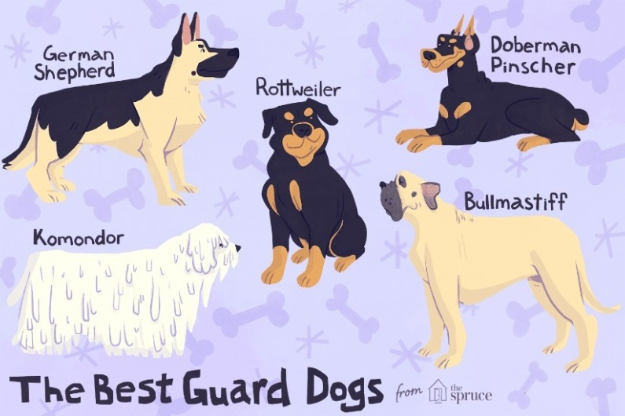
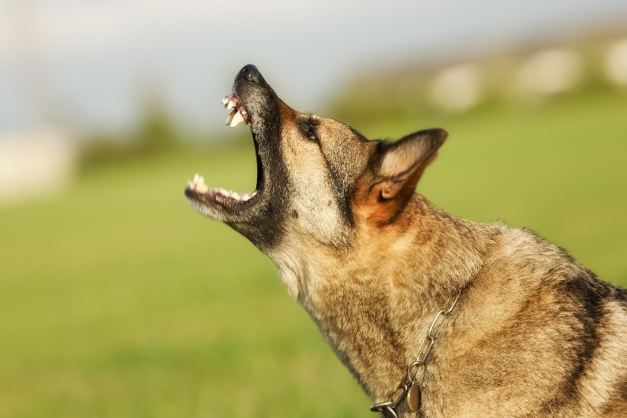

Guard Dogs
Page 1
Page 2
Page 3
Page 4
 
Click on any of the dogs above to learn about which is the best guard dog
Click on the audio to hear what a german shepherd bark sounds like
Hear what a german shepherd bark sounds like